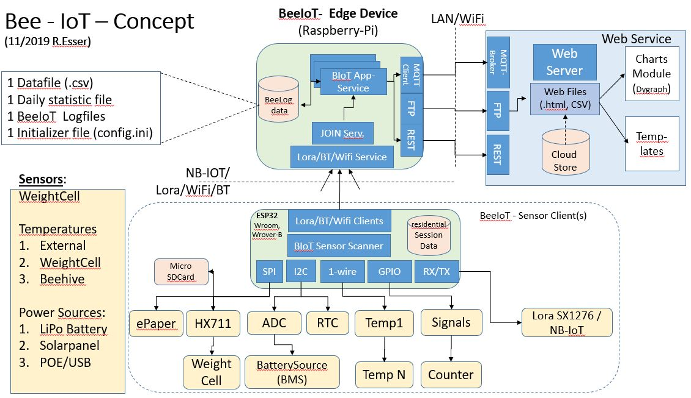
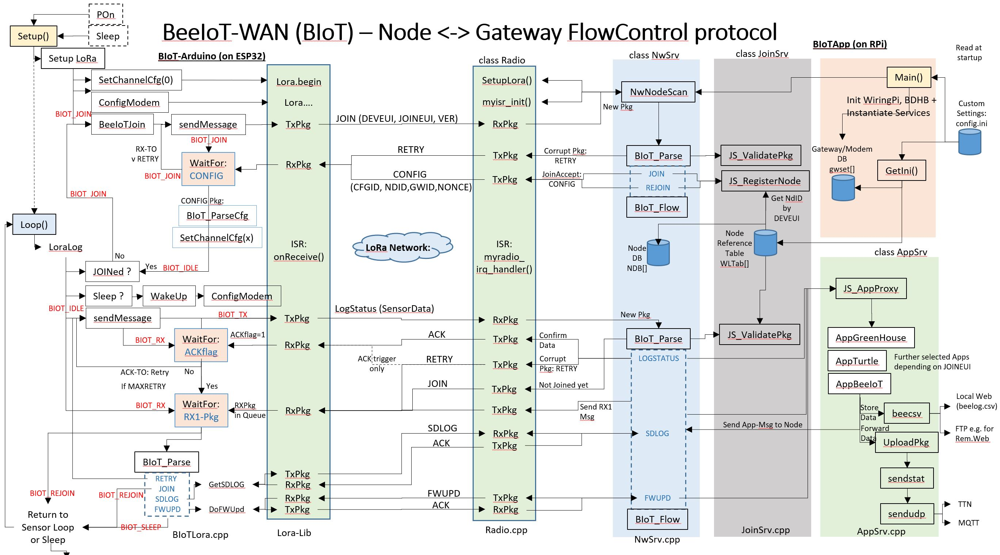

01.01.2020 by Randolph Esser
* [Die Programm Struktur](#die-programm-struktur)
+ [Setup Phase](setup-phase)
+ [Loop Phase](loop-phase)
* [Optional: WebUI Daten Service](#optional:-webui-daten-service)
Nach der Beschreibung der BeeIot Sensor Knoten auf Basis des ESP32 chipset (siehe https://Github.com/mchresse/BeeIoT), nun die passende Gegenstelle auf Raspberry Pi Basis.
Diese erfüllt (ähnlich wie bei LoRa-Wan) folgende Rollen/Services:
Bevor wir tief in die LoRa SW Stack details eintauchen, zunächst der HW AUfbau des RaspberryPi Gateway.
Im Single Channel Betrieb müsste leistungsmäßig ein RPi-ZeroW reichen (Der Prototyp wurde mit einem RPi 3+ gestartet).
Im folgende Diagramm sieht man das Gesamtkonzept von Sensor-Client über Gateway zum WebServer User Interface (HMI):

Alle Clients kommunizieren per default via Lora-Funk mit dem Gateway, dessen Pakete über einen JOIN Server (dazu später mehr) an die dahinter liegenden Applikation-Services zur Erst-Verarbeitung weitergereicht werden. Diese Evaluieren die LoRa Paket Frame-Payloads und extrahieren die Sensordaten zur Ablage in einer zentralen Client Datenbank. Via REST oder MQTT oder auch FTP werden die Daten an Darstellungs-Services wie der eigenen Webseite weitergeleitet.
Da in der Regel nur alle 10-15 Minuten Datenpakete der Clients (mit einer Laufzeit von 150-200ms) übertragen werden, bleibt genügend Rechenzeit die Pakete zu dekodieren, und in passende Übertragungsformate zu wandeln.
Die LAN/WiFi Anbindung ist dank Raspberry HW+OS bereits abgedeckt (Details siehe ggfs. auch in der Doku zum “BeeLog-Projekt: BeeLogDoc_v1.3.md” auf GitHub). Daher ist “nur noch” ein LoRa Modul nötig.
Der Semtech Chip SX1276 ist der kostengünstige Standard für Lora Übertragung und in vielen HAT-Varianten verbaut. Ich habe hier den Dragino_Lora_Hat v1.4 für 868MHz mit optionalem GPS Empfänger verwendet:
Eine einfache passive Antenne ist per SMA Stecker schnell angebracht.
Einfach auf den RPi aufstecken, die RPi-SD Karte mit Debian OS installieren und los gehts:
Für die Ansteuerung des Dragino Hat’s muss über das raspi-config tool noch der SPI Channel aktiviert werden und die universelle wiringPi Library downloaded und installiert werden (siehe auch dazu in der o.a. Doku des BeeLog Projektes).
Die vom HAT verwendeten SPI- und weitere Steuerleitungen sind in der Header-Datei beelora.h festgehalten:
// Dragino RPi Hat with SX127x at Raspberry 40p connection: -> wPi Mode !
#define CFG_sx1276_radio // type of Dragino Hat LoRa chip
// WirePi-Pin:
#define LORAcs 6 // GPIO 25 Pin 22
#define LORAdio0 7 // GPIO 4 Pin 7
#define LORAdio1 4 // GPIO 23 Pin 16
#define LORAdio2 5 // GPIO 24 Pin 18
#define LORArst 0 // GPIO 0 Pin 11
#define LORAmosi 12 // GPIO 10 MOSI Pin 19
#define LORAmiso 13 // GPIO 9 MISO Pin 21
#define LORAsck 14 // GPIO 11 SCLK Pin 23
#define RXled LORAdio0
#define GPStxd 15 // GPIO 15 TxD -> GPS
#define GPSrxd 16 // GPIO 16 RxD -> GPS
Geplante Erweiterung:
Will man die aktuelle Single Channel HAT Variante um weitere Lora-Channel erweitern,
bestellt man sich einfach weitere Semtech Module a la RFM95 (wie auf dem HAT und bei allen Clients verbaut) und lötet sie parallel Piggy Back oben auf.
Als Auflötpunkte können die Vcc und Gnd Leitungen sowie die shared SPI Leitungen (SCK, MISO, MOSI) verwendet werden. Alle anderen DIO3-5 bleiben ungenutzt.
Folgende Anschlüsse müssen exra an einen RPi GPIO Port frei verdrahtet werden:
LoRacs(NSS), LORAdio0-2, LORArst.
So kann man den 2. SX1276 separat über eine eigene SPI Adresse ansprechen, indem man in der SW eine neue Lora-Instanz mit den o.g. NSS und RST GPIO-Ports erzeugt.
Der aktuelle Aufbau besteht aber noch aus der SingleChannel Version.
Das dadurch entstandene “RPi/HAT Paket” wird noch in eine IP67 Dichte Box verpackt (die Antenne kann bei einer Plastikbox auch intern bleiben), die LAN Leitung wasserdicht umhüllt von einem Wetterschutzrohr herausgeführt, an den Antennenmast geschraubt. Die LAN Leitung habe ich innerhalb des Rohrs ins Haus geleitet.
Das ist der optimale Punkt um im Radius von 3-4km alle Bienenstandorte zu erreichen.
Ggfs. kann die Reichweite noch durch eine rundstrahlende LoRa Aktiv-Antenne (ca. 120€) mit +6dBm verbessert werden, macht aber für die BeeIoT-SW keine Unterschied.
Die SX1276 Konfiguration, die Steuerung der Paketübertragung sowie das IRQ handling via eigener IRQ callback Funktion habe ich abgeleitet vom LMIC radio Layer native nachimplementiert, dabei aber weitgehend die API des LMIC radio layers beibehalten.
Der NwServer verwendet folgende Schnittstellen Funktionen:
- SetupLora() // Detect and Initialize SX1276 chip
* configChannel() // preset configchannel seetings by ChannelIndex
* configLoraModem() // preset LoRa Modem settings for BIoT channels
* radio_init() // preset random matrix
* myisr_init(); // Assign ISRs to IRQ Port DIO0-2
- starttx() // final Packet TX routine
- startrx() // enable RX Mode (single + contig.) -> in combination with ISR()
Die vom Radio-Layer implizite bei jedem IRQ aufgerufene ISR-Callback Funktion:
- myradio_irq_handler() // ISR-callback for RXDone and TXDone IRQs
setzt im TX Mode zur Best#tigung der Sendung das BeeIotTXFlag und füllt im RX-Mode die RXQueue mit den Empfangs-Paketdaten und setzt schliesslich das BeeIotRXFlag-Semaphor.
Der Grundsätzliche HW Aufbau des “BeeIot Sensor Knoten” wurde ja schon im BeeIoT Projekt beschrieben.
Zum Verständnis für die SW Stack Beschreibung zusammenfassend:
Die Inbetriebnahme des LoRa Moduls wird dadurch sehr einfach.
Hier zunächst die wichtigsten Funktionen:
LoRa.setSPI(myspi); // new SPI Instanz of spi_t
LoRa.setSPIFrequency(spi-frequency); // default: 8MHz
LoRa.begin(LoRaCfg.freq); // default: EU868.1
LoRa.setPins(BEE_CS, BEE_RST, BEE_DIO0);// set CS, reset, IRQ pin
LoRa.beginPacket(implHdr); // for BIoT: implHdr=0 -> explicite Header only
LoRa.write(byte); // write single Byte to TX Buffer
LoRa.write(&date, len); // write byte stream with "len" Byte to TX buffer
LoRa.endPacket(async); // send buffer; async=0 - > wait for TXDone IRQ
Problem: Bleibt der TXDone aus -> Exception: muss in SW angefangen werden.
LoRa.onReceive(onReceive); // Type: void onReceive(int pkglen);
LoRa.receive(); // No Parameter -> explicite header Mode
Ein standard Arduino Sketch besteht aus der Setup() und der Loop() Phase:
Bei PowerOn startet der Boot Loader erst einmalig die Setup Phase. Anschliessend wird die Loop Funktion in einer Endlosschleife aufgerufen. Es sei denn, man geht am Ende in den Sleep() Mode. Beim darauffolgenden WakeUp (z.B. RTC getriggert) startet der bootLoader wiederum die Setup Phase.
Aus diesem Grund wird in der Setup-Funktion als erstes ein “reentrant Check” über ein resident gespeichertes Exit-Mode Flag durchgeführt.
Wird ein Sleep/Wakup Cycle erkannt, werden die residential gespeicherten Runtime Daten, welche beim Sleep Einstieg gespeichert wurden, zur Initialisierung der Betriebsstrukturen zurückgeladen. Ggfs. werden alle Sub-Setup Routinen der Sensorkomponenten nochmal durchlaufen, diesml aber im Reentrant Mode, falls eine Fallunterscheidung nötig ist.
Nach der Setupphase, in der alle Sensor- und Kommunikationsmodule sowie das ePaper Display discovered wurden, und ggfs. die letzten Runtime parameter rückgeladen wurde, folgt die eigentlich Sensor monitoring Loop:
Der BIoTWAN Radio Layer versteckt sich im Gesamt-FunctionFlow des Clients in der Sensor-Report Funktion über remote-Kanäle:
Für das Lora Protokoll ist der Erhalt des Runtime Parameter Status essentiell wichtg um ev. Paketübertragungszähler oder Encoding Keys weiter zu verwenden.
Dies ist nötig um ein Minimum der BIoT Protokoll Sicherheitsfunktionen aufrecht zu erhalten:
Denn der GW würde weitere Anfragen zurückweisen, wenn nicht der richtige Paketzähler im Payload (welcher mit dem richtigen Schlüssel enkodiert wurde) der Sendung enthalten ist. Das verhindert eine Man-In-the-Middle Attack des BIoT Protokolls und damit der gesamten LoRa Kommunikation.
Würde man bei jedem WakeUp einen JOIN Request mit rückgesetzten Zählern starten, könnte das jeder tun, der sich der DevEUI+JoinEUI-Keys bemächtigt hat (dazu später mehr).
So muss der JOIN Prozess einmalig in “geschütztem” Umfeld erfolgen, aber alle weiteren Konnektierungsversuche können mit einem REJOIN Kommando erfolgen, welches akt. Zaehler und Keys voraussetzt.
Da der Private key zur Entschlüsselung ausschliesslich auf GW Seite im JOIN Service vorgehalten wird sind auch die Clientseitig gespeicherten SDCard Daten soweit sicher vor einem Intruder-Attack.
Das LoRaWAN[^TM] Protokoll legt speziell in dre Version v1.1 weitere Vorgaben (Stichwort: Rekeyeing) zur Absicherung u.a. auch folgender REJOIN Requests fest, würde aber bei der Bedeutung der BeeIoT Daten den Aufwand zur Verwaltung sprengen. Am Ende geht es um Bienenstockdaten, nicht um Fertigungsstrecken.
In einer professionellen Anwendung würde man auf beiden Seiten die sicherungswürdigen Schlüssel z.B. in einem Security chip a la TPM/Xsensiv ablegen.
Die auf der Client Seite getroffen Massnahmen zur Zählerverwaltung und Verschlüsselung müssen natürlich auf Gateway- sowie NwServer Seite entsprechend auch unterstützt werden.
Nun aber zum Prinzip des eigentlichen BeeIoT-WAN Protokolls:
Für die remote Connection zu den BeeIoT Clients/Knoten ohne “stromfressenden” WiFi Betrieb oder nicht-erreichbarem Hotspot, ist ein LoRa Funktmodul vorgesehen.
Auf 868MHz voreingestellt kann es abhängig von der räumlichen Topologie Reichweiten bis zu 8km ermöglichen.
Die LoRa modullierte Funkübertragung ermöglicht geringe Band-Belastung und geringem Stromverbrauch durch möglichst kurze on-air Phasen bei max. Reichweite. Und das in einem freien Band von 868MHz.
Das dafür entwickelte LoRaWAn(TM) Protokoll ist sehr ausgereift, erscheint aber für private Netzwerke in kleinem Umfang von der Komplexität her überdimensioniert.
Zwar werden auch Private Netzwerke unterstützt, eine Zertifizierung bei der Alliance wäre aber dennoch sinnvoll nötig, wenn man in einem LoRaWAn Netzwerk auch kompatible Gateways und NetzwerkServer unterhalten will.
Da ein GW ggfs. mit mehreren Clients quasi-gleichzeitig zu tun hat, die ihrerseits aber unterschiedliche Abnehmer (Apps) in Verbindung stehen, ist eine OSI Stack ähnliche Struktur nötig, um das Paketmanagement, die Kontrolle des Übertragungsmediums, und das Switching zu Applikations-Diensten zu koordinieren:
Die Netzwerkverwaltung oberhalb des Radiolayers z.B. in Form des LoRaWAN(TM) Protokolls leisten z.B. folgende Bibliotheken (z.B. die OSS Lib: LMIC von IBM -> search in GitHub) oder Radiohead.
Ein weiterer interessanter Client sample Code findet sich über eine Beispielprojekt des Opennet teams: https://wiki.opennet-initiative.de/wiki/LoRaSensor .
Bei LMIC nimmt der sogenannte “OS” Layer einem das Queueing hereinkommender Pakete sowie die protokollgerechte Quittierung sowie das Bandmanagement vollständig ab.
Darin sind eine Peer2Peer Verbindung über unique Sender/Empfänger IDs und AES128-Verschlüsselungs ähnlich wie bei TCP/IP kombiniert mit SSH enthalten.
Es zeigten sich aber bei der Migration der LMIC Lib v1.6 Instablitäten des LoRa Modes
-> es wurden immer wieder FSK Mode IRQs empfangen, was die LoRa Statusführung stoppte.
Auch ist das von IBM gewählte OS layer Model nicht so handsam wie erwartet.
In Summe stellte die LMIC-Lib für den ESP32 in Kombination mit den übrigen Aktionen zur Sensorbehandlung zumindest auf Node/Cient Seite einen ziemlichen overhead dar, der aber leider nötig ist um das vollständige LoRa-WAN Protokoll nach Spezifikation zu erfüllen (e.g. Band-Hopping, LoRaWAN v1.1 Encryption key handling, channel calibration usw.).
Angelehnt an den RADIO Layer (radio.c) von LMIC v1.6 ist für dieses Projekt ein eigenes Single-Channel WAN Protokoll entstanden (BeeIoT-WAN) welches die Paket Kommunikation auf den grundsätzlichen Austausch von Sensordaten mit einfacher Quittierung (zunächst ohne Multi-Bandmanagement) “optimiert”.
Aus diesem Grund habe ich eine abgestrippte Veriante entworfen, die den BeeIoT Anforderungen gerecht wird und sich leichter in den äußeren Ablaufrahmen (speziell beim ESP32) migrieren lässt:
Die Störfälle sind bekanntermaßen:
Natürlich wurden diese Designvorgaben für beide SW Stacks auf Client und Server-Seite angewandt.
Zur Übersicht der beidseitigen Kommunikations Layer inAnlehnung an das OSI Mdell und als referenz für die folgenden Artikel, hier der vollständige Function-Flow Plan wie er aktuell in BIoTWAN v1.0 implementiert wurde:

Auf der linken Client-Seite sind die Setup() und die Loop Funktion zu erkennen.
Von ihnen ausgehend erfolgen alle Aktionen, da zu allen Phasen der Kommunikation der Client der Master ist (mal vom RX1 Fenster abgesehen).
Am Ende der LoRa Setup Phae erfolgt bereits der erste JOIN Versuch mit dem BIoT Netzwerk. Ist dieser erfolgreich wehcslet der Runtime Staus in BIoT_IDLE was bedeutet: RX/TX ready.
Schlägt der JOIN request fehl, gibt es eine Anzahl Retries mit abnehmender Wiederholfrequenz als Teil der eigenltichen Loop Sequenz.
Dazu wird einfach bei jedem reportversuch über LoRa der Status geprüft:
Um gehäuften Konflikten auf einem ConfigChannel ausweichen zu können, werden sowohl im Gateway als auch in jedem Knoten folgende ConfigChannel Datensätze geführt, zwischen denen der Netzwerk Service bei einer OTAA Join Session auswählen kann:
| Index | Frequence | Band | Spreading Start | Spreading End | CodingRate | TxPower | DutyTime |
|---|---|---|---|---|---|---|---|
| 0 | EU868.1 | 125kHz | SF7 | SF12 | CR4_5 | 14 | 10x |
| 1 | EU868.3 | 125kHz | SF7 | SF12 | CR4_5 | 14 | 10x |
| 2 | EU868.3 | 250kHz | SF7 | SF7 | CR4_5 | 14 | 10x |
| 3 | EU868.5 | 125kHz | SF7 | SF12 | CR4_5 | 14 | 10x |
| 4 | EU867.1 | 125kHz | SF7 | SF12 | CR4_5 | 14 | 1x |
| 5 | EU867.3 | 125kHz | SF7 | SF12 | CR4_5 | 14 | 1x |
| 6 | EU867.5 | 125kHz | SF7 | SF12 | CR4_5 | 14 | 1x |
| 7 | EU867.7 | 125kHz | SF7 | SF12 | CR4_5 | 14 | 1x |
| 8 | EU867.9 | 125kHz | SF7 | SF12 | CR4_5 | 14 | 1x |
| 9-14 | reserved | ||||||
| 15 | EU869.525 | 125kHz | SF7 | SF12 | CR4_5 | 14 | 1x |
CC0 ist der default Config Channel und CC15 wird für datenintensive Downlink Aktionen verwendet.
Dank dieser verteilten Tabelle muss nur der ConfigChannel-Index bei einem CONFIG Kommando zw. Client und Server übertragen werden und beide Seiten stellen sich auf den neuen Kanal bei der nächsten Session ein. Läuft etwas schief -> Rückfall auf den default Channel mit einem Rejoin Versuch durch den Client (Zaehler und Keys bleiben dann aber unverändert).
Zum Austausch zwischen 2 Instanzen bedarf es einer gemeinsamen Sprache und gemeinsamen Syntax.
Diese gemeinsamen Festlegungen (typedefs) wurden in der Header Datei BIoTWAN.h zusammengefasst.
Die ausgetauschten Pakete zwischen Knoten und Gateway/NwServer haben folgendes Format:
Der SX1276 chip befasst sich mit der reinen Rohdatenübertragug und Kanalsynchronisierung (oranger Bereich).
Der Radio Layer transportiert davon den grünen Bereich, die Intepretiert des darin enthaltenen Headers wird vom NwServer übernommen. Durch die MIC validierung stellt er auch die Konsistenz des Daten-Paketes sicher.
Der verschlüsselte gelbe bereich ist dem AppServer vorbehalten, der anhand seiner private keys die Entschlüsselung des frame-payload durchführt.
Erst dann stehen die eigentlichen Sensordaten zur Weiterverarbeitung zur Verfügung.
Das Basis-Datenpaket hat folgendes Format (beeiotpkg_t):
Der Client erhält die Destination- und Sender-ID beim JOIN Protokoll vom NwServer mitgeteilt.
Für das JOIN Protokoll selbst werden Defaultwerte verwendet (CChn0, GWIDx, NODEIDBASE).
Auch die Start Packet ID wird erst beim JOIN seitens NwServer mitgeteilt. Als Master des Protokolls verwaltet aber der Client das nachfolgende Hochzählen. Es gibt nur eine Packet-ID unabhängig der Sendungsrichtung, und der akt. Wert ist der Einfachheits-halber über die akt. Session hinweg gültig.
(ToDo: getrennte Zaehler für beide Richtungen würde die Sicherheit erhöhen).
Die Bedeutung des eigentlichen Packet-Kommandos ist neben dem Wert auch vom Session Context abhängig:
Die folgende Tabelle führt die Bedeutung für den Empfänger (!) auf:
| Command | received by Client | received by NwServer |
|---|---|---|
| CMD_JOIN | no action | GW sends CONFIG: new CfgCHN ID + Pkt ID + Node/GW ID + AppKey |
| CMD_REJOIN | Send new JOIN Request to GW | GW sends CONFIG: current(!) assigned CfgCHN ID + Pkt ID + Node/GW ID |
| CMD_LOGSTATUS | no action | Forward Frame to AppServer: Process Sensor log data |
| CMD_GETSDLOG | Send SDcard data | Forward Frame to AppServer: Process SDCard data |
| CMD_RETRY | Send same Pkg again (last pkg was corrupt) | no action |
| CMD_ACK | NOP: Ack. for last sent Pkg by GW (except JOIN -> Accept by CONFIG) | NOP: Ack. for last sent Pkg by Node |
| CMD_CONFIG | set new CfgChn + Node/GW-ID for next sessions | no action |
| CMD_RES6 | reserved | reserved |
| CMD_RES7 | reserved | reserved |
| CMD_RES8 | reserved | reserved |
| CMD_TIME | no action | Send curr. Time Stamp to Node |
| CMD_NOP | no Action | send ACK to Node |
Die Kommando-spezifischen Paketinterpretationen werden durch ein Cast der jew. CMD-Typedef Strukur auf beeiotpkg_t erreicht.
Ein JOIN request muss im Idealfall nur einmal zur Lebenszeit eines CLients abgesetzt werden, und zwar im Anschluss oder während der Setupphase eines Knoten. Ein erfolgreicher JOIN-request des Knotens wird durch ein JOIN Accept Paket: CONFIG des NwServer quittiert.
JOIN Voraussetzungen als Massnahme auch im Störfall:
Für einen JOIN request hat der Client immer den default ConfigChannel: CC0 sowie die default GW-/Node-IDs: GWIDx und NODEIDBASE zu verwenden.
Ein REJOIN Request muss ebenfalls über dieses Band CC0 und verwendung der GWIDx erfolgen, die NodeID darf die aktuelle sein; ansonst wird er abgewiesen.
Alle der JOIN Session folgenden RX/TX Transfer Sessions haben über den zugewiesenen Channel unter verwendung der neuen GW/Node-IDs zu erfolgen, welche im Join-Accept CONFIG Paket seitens des Netzwerkservers mitgeteilt wurden.
Das JOIN Paket hat das format: beeiot_join_t
Der enthaltene JOIN Payload (joinpar_t) enthält folgende Angaben:
Was im aktuellen BIoT Design noch fehlt:
Viel Spass damit und einen Imkerlichen Gruss
wünscht Euch
Randolph Esser
(mail(a)RandolphEsser.de)
www.RandolphEsser.de
==> Imkerei